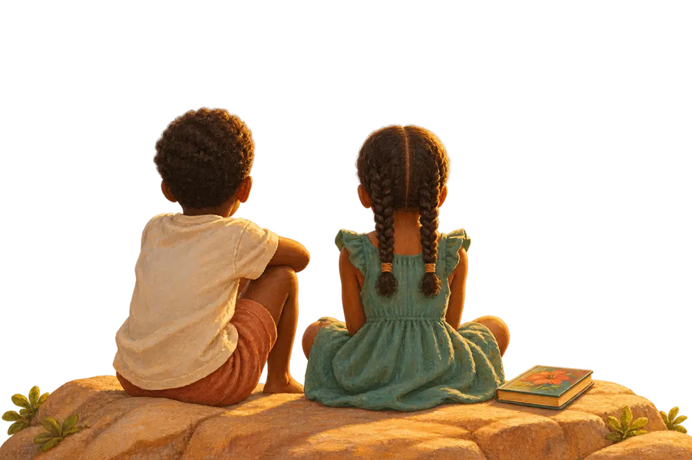
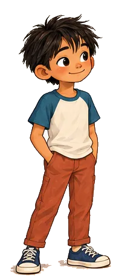
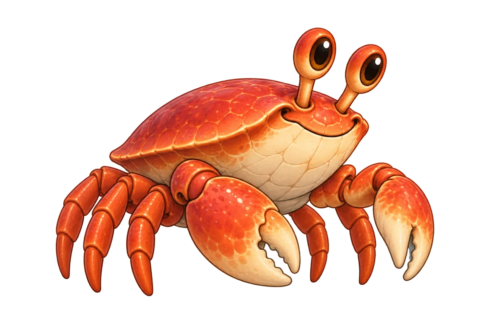
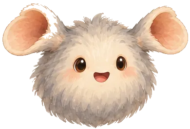
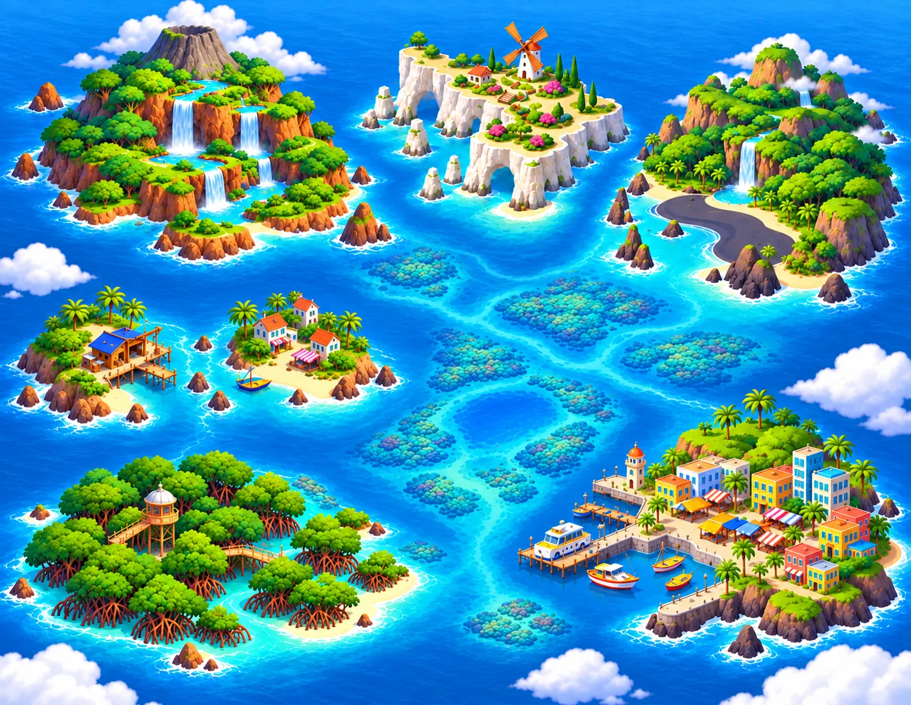
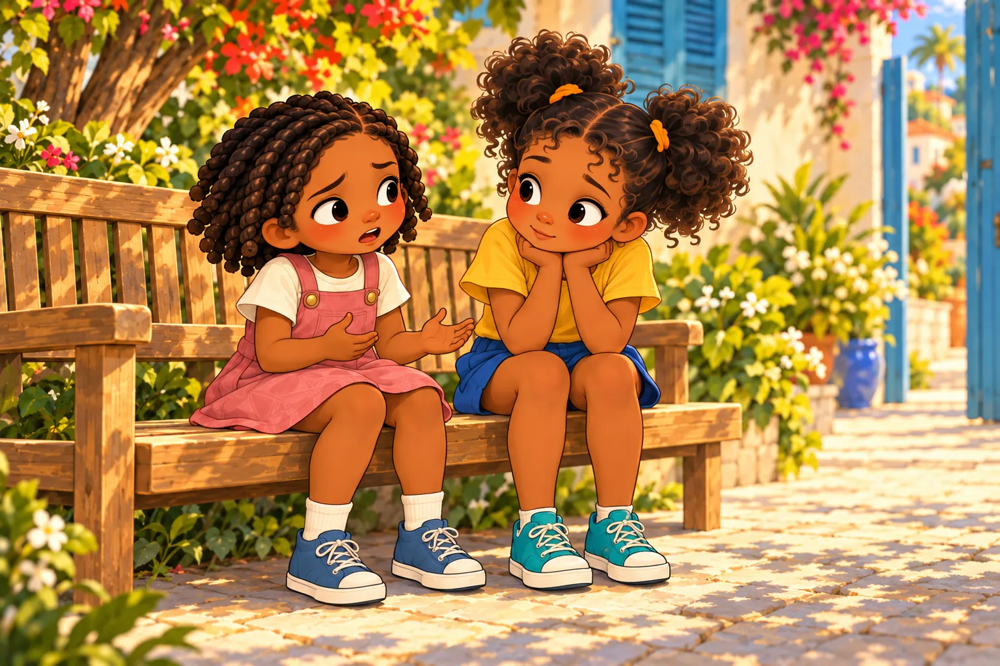
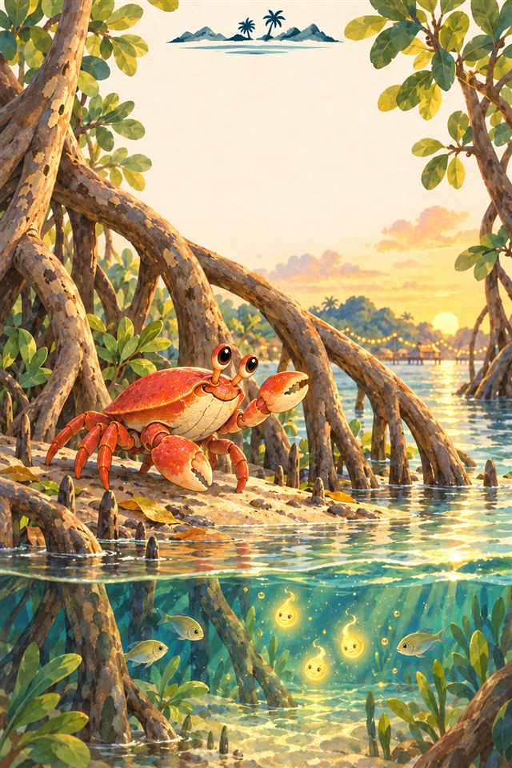
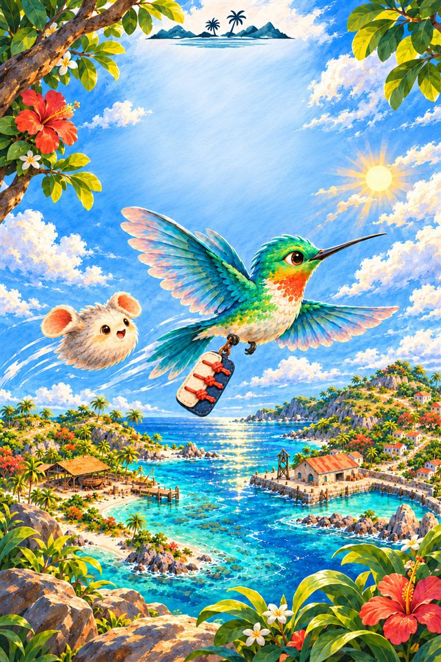
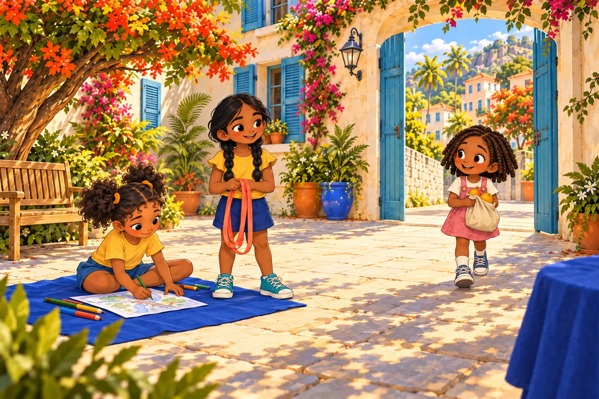
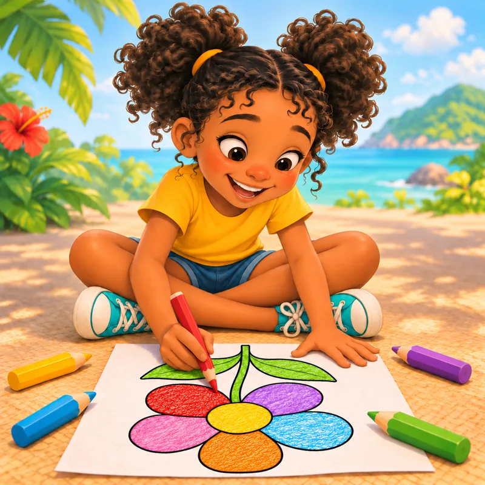

Une photo ratée… et une belle surprise.
Abel veut photographier les poissons volants. Mais comment saisir le bon instant ?
DES HISTOIRES À PARTAGER · 4–8 ANS
Des îles à découvrir. Des amis à retrouver. Et tout un monde à imaginer ensemble.
Lancement prévu fin novembre – début décembre 2026

01 / LA BIBLIOTHÈQUE DES CURIOSITÉS
Quelques livres pour entrer dans l’Archipel. D’autres personnages et aventures sont en préparation.
Une photo ratée… et une belle surprise.
Abel veut photographier les poissons volants. Mais comment saisir le bon instant ?
Un goûter qui colle aux pinces.
Vivi apporte de la mangue à Pito. Pourtant, elle aimerait bien garder le plus gros morceau…
Une amie. Deux amies. Et moi ?
Lou retrouve Anjali, qui joue déjà avec une autre enfant. Y aura-t-il une place pour chacune ?
Les grandes envies des petits jours.
Salomé veut terminer son cerf-volant poisson. Mais aujourd’hui, elle est trop fatiguée.
Sélection non exhaustive : ces couvertures donnent un aperçu de l’univers, pas la liste complète des histoires prévues.




Un monde à explorer
Une rencontre peut tout changer02 / PLUS QU’UNE PAGE À TOURNER
Des lieux à explorer, des amis à retrouver et des petits choix qui font naître de grandes aventures.
Krik, petit crabe rouge, veut retrouver ses amis. Silo, colibri messager, transporte des mots d’une île à l’autre. Leurs envies et leurs gestes donnent à chaque aventure un rythme et une couleur qui leur ressemblent.
Sept lieux composent l’Archipel : la mangrove, les îlets, les jardins, les ports et les ruelles. Une marée peut fermer un passage; un quai peut rapprocher deux amis. Le décor fait partie de l’action.
Les récits suivent des envies, des surprises et des choix à hauteur d’enfant. À 4–5 ans, les gestes et les émotions restent concrets; à 6–8 ans, indices, stratégies et liens entre personnages prennent plus de place. Chaque histoire peut se lire ou s’écouter en famille.
Chaque histoire ouvre une porte
LE LIVRE S’OUVRE. LE MONDE S’ANIME.
On écoute, on s’arrête sur un mot, puis on retrouve son livre ou un personnage familier.

Découvrez le titre et le début de l’aventure avec la voix de Kiki.
Un mot, une découverte
Touchez pour voir l’explication
Une mangrove est une forêt entre la terre et la mer, où les racines des arbres plongent dans l’eau.

Les favoris gardent les livres choisis à portée de main.

Chaque enfant retrouve sa progression. Les parents gardent la main sur les réglages.
La galerie aide à revoir les personnages rencontrés et les livres où ils apparaissent.

Les coloriages prolongent l’exploration de l’univers.
Un adulte lit à voix haute, l’appareil prend le relais ou la famille retrouve une voix enregistrée. L’histoire avance page après page, au rythme choisi ensemble.
Un mot intrigue? Touchez-le pour lire ou écouter une explication courte. Reprenez ensuite l’histoire à la page où vous étiez.
Gardez à portée de main les histoires choisies. Un favori reste facile à retrouver pour une nouvelle lecture ou une écoute de plus.
Chaque enfant reprend sa progression à lui. Les parents gèrent les profils et les réglages de lecture de la famille.
La galerie fait réapparaître les personnages croisés et les livres où les retrouver. Un visage familier peut donner envie d’ouvrir une autre histoire de l’Archipel.
Coloriages et petits jeux prolongeront l’univers après la dernière page. Ces activités sont en préparation; leur disponibilité sera annoncée au lancement.
Un aperçu de l’expérience prévue dans Timouni. Les fonctions disponibles seront précisées au lancement.
03 / LE RENDEZ-VOUS EN FAMILLE
On regarde, on écoute, on pose une question. L’histoire avance à votre rythme.
Une voix familière, des images à observer, des émotions à nommer. L’adulte lit et laisse de la place aux questions.
On écoute ou on lit avec un adulte, selon son aisance. On imagine la suite et on parle des choix des personnages.
Le lecteur en préparation propose la voix de l’appareil et l’enregistrement d’une voix parentale, page après page. Les voix disponibles dépendent de l’appareil.
Le lancement de l’application est prévu entre fin novembre et début décembre 2026. La date précise sera confirmée ici.
Les histoires seront proposées en français et en anglais. D’autres langues suivront ensuite.